Need for clear business brand identity
After rebranding from SearchOwl, Sorcea Labs lacked a clear identity to communicate its mission and attract potential partners.
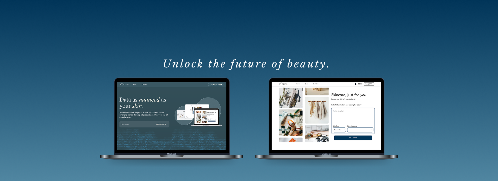
Problem
After rebranding from SearchOwl, Sorcea Labs lacked a clear identity to attract partners, while skincare shoppers struggled to find products they trusted, leading to abandoned carts.
3 Designers
1 Developer
2 Co-Founders
UX/UI Design Intern
May – Aug 2025
Sorcea Labs is a beauty-tech startup combining AI and skincare to help shoppers find personalized products while giving brands real-time market analytics.
Rebrand the Sorcea Labs website to build trust with partners, and redesign the Sorcea consumer platform to make skincare shopping more intuitive and confidence-driven.
Competitive Analysis • Branding • Wireframing • Design Iterations • High-Fidelity Mockups • Stakeholder Collaboration
01 Define
The two main problems we were tasked with addressing:
After rebranding from SearchOwl, Sorcea Labs lacked a clear identity to communicate its mission and attract potential partners.
Skincare shoppers often feel uncertain about which products will work for them, leading to endless scrolling through reviews and abandoned carts.
Primary objectives
Based on these challenges, my role focused on two main design goals:
02 Research
Based on my conversations with the co-founders, the Sorcea Labs website aimed to merge beauty and tech aesthetics, while the Sorcea website focused primarily on a beauty-driven look and feel. To guide this direction, I conducted a SWOT analysis of competitors in the tech and skincare industries.
My goal was to understand not only the functionality of these sites, but also what visual and experiential elements made a website feel “tech-y” versus “beauty-focused.”
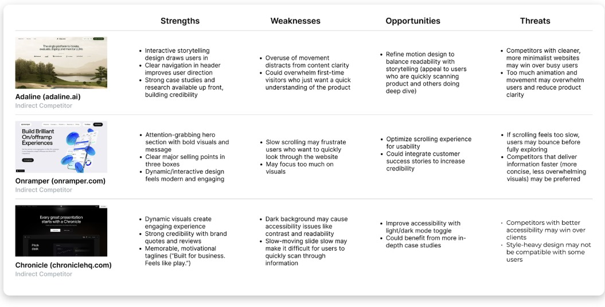
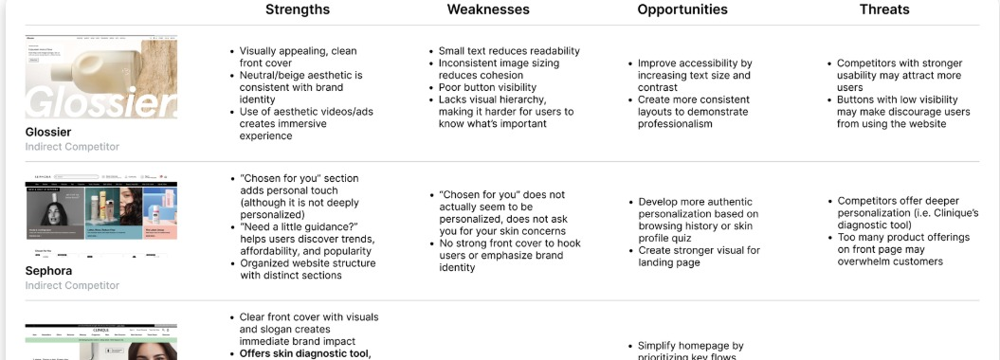
03 Ideation
From my competitive analysis research, I gathered key principles to guide me through Sorcea Labs’ business and skincare platform designs.
Showcase case studies and clearly highlight what sets the brand apart to establish credibility.
Use a bold hero section with strong visuals and a clear tagline to immediately capture attention.
Incorporating interactive and dynamic elements creates a modern, tech-driven aesthetic.
Highlight individual skincare concerns and guide users toward products tailored to their needs.
Establish a strong first impression with a visually appealing landing page, clear values, and testimonials.
Use clean, neutral colors and high-quality visuals to create a calming, beauty-focused look and feel.
04 Design
The other designers and I had the freedom to bring our own visions for the websites to life, and we regularly came together to share our progress, gather feedback, and combine our ideas. The final designs were a combination of all of our work.
Each iteration helped narrow the business site from a busy visual direction into a more sophisticated, tech-forward identity.
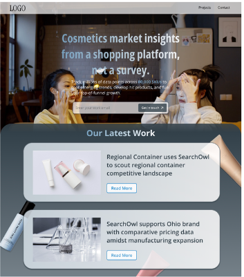
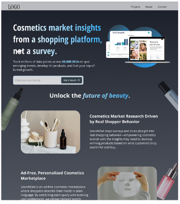
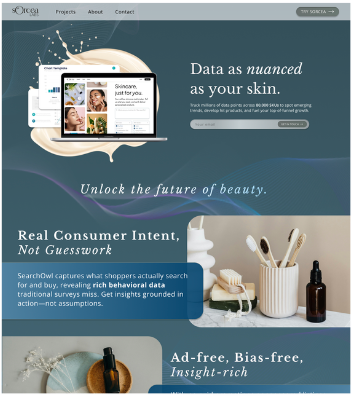
From a single large slideshow of questions to smaller bubbles that cycle through questions and support interactive scrolling.
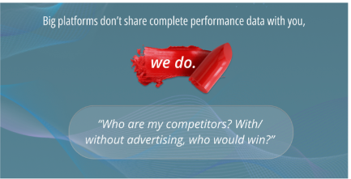
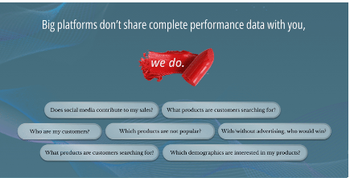
For Sorcea’s landing page, I aimed to present all key information on a single, easy-to-navigate page. I also refined the design while preserving Sorcea’s natural language search and filters to help users find personalized products.
Exploring how imagery, search, and layout could balance beauty, clarity, and confidence.
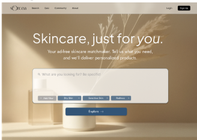
Background might be too distracting and hard to read.
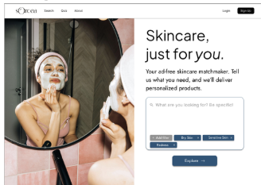
Almost there, but needs to be more dynamic.
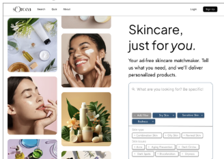
Dynamic, moving images balance information on the right.
Moving filters closer to the search box reduced extra steps and made the interaction feel more editable.
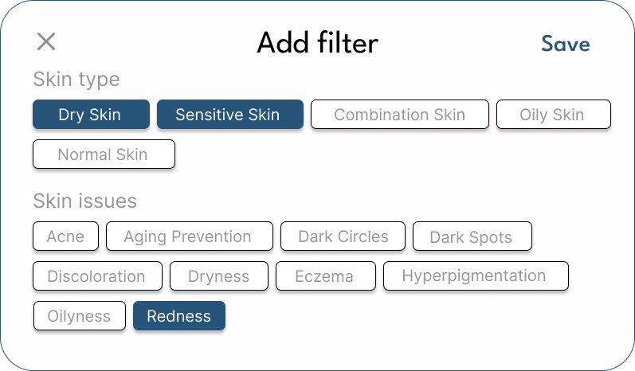
Filters could only be edited in a pop-up, which might be inconvenient.
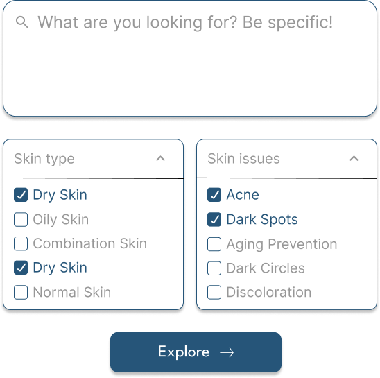
Users had to open two dropdowns, which could add friction.
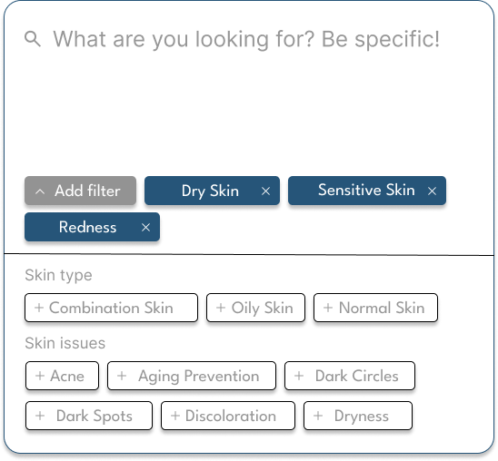
Filters are integrated into the search box and can be easily edited.
Developed mockups for Sorcea’s new favorites page to improve navigation and personalization.
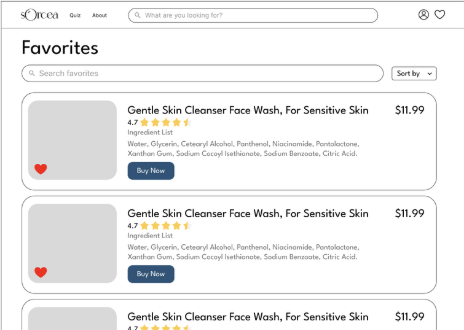
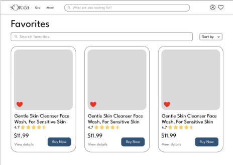
05 Solution
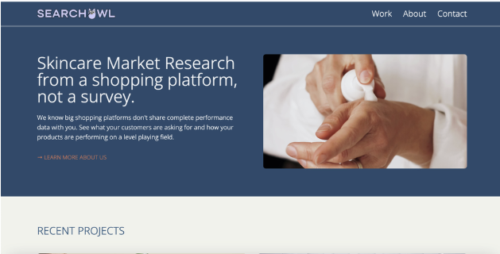
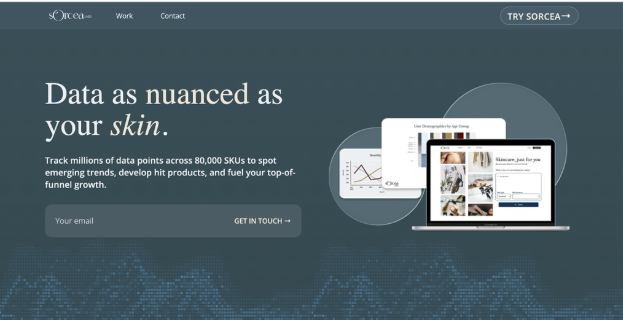
Sorcea Labs
Sorcea
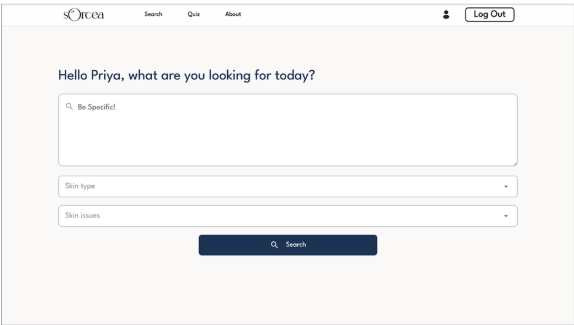
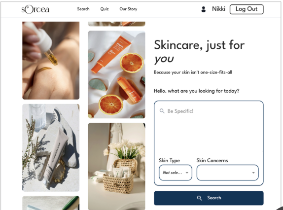
06 Impact
Because Sorcea Labs is still undergoing many design changes, we don’t yet have many finalized statistics. However, we did observe a 7% increase in average active time on the skincare website.
If we were to measure how effective our designs are at increasing user and brand trust, I would track metrics such as:
07 Reflection
This was my first role as a UX/UI designer on a team, and I learned so much about how to collaborate with other designers, respond to feedback, and research competitors. I also discovered that creativity isn’t always linear; sometimes, my half-baked ideas resonated more with the team than the ones I felt confident in.
This experience taught me the value of sharing openly, thinking creatively, and always keeping users’ needs in mind.
Thank you so much to Sorcea Labs for giving me this opportunity!
back to top ↑